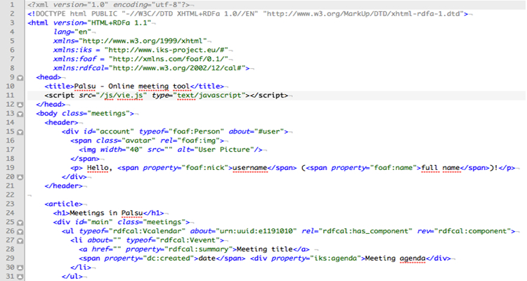
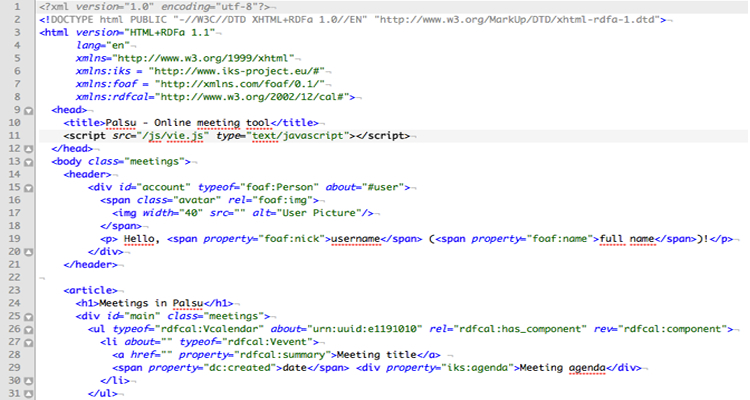

HTML, siglas en inglés de HyperText Markup Language (‘lenguaje de marcas de hipertexto’), hace referencia al lenguaje de marcado para la elaboración de páginas web. Es un estándar que sirve de referencia del software que conecta con la elaboración de páginas web en sus diferentes versiones, define una estructura básica y un código (denominado código HTML) para la definición de contenido de una página web, como texto, imágenes, videos, juegos, entre otros. Es un estándar a cargo del World Wide Web Consortium (W3C) o Consorcio WWW, organización dedicada a la estandarización de casi todas las tecnologías ligadas a la web, sobre todo en lo referente a su escritura e interpretación. HTML se considera el lenguaje web más importante siendo su invención crucial en la aparición, desarrollo y expansión de la World Wide Web (WWW). Es el estándar que se ha impuesto en la visualización de páginas web y es el que todos los navegadores actuales han adoptado.
El lenguaje HTML basa su filosofía de desarrollo en la diferenciación. Para añadir un elemento externo a la página (imagen, vídeo, script, entre otros.), este no se incrusta directamente en el código de la página, sino que se hace una referencia a la ubicación de dicho elemento mediante texto. De este modo, la página web contiene solamente texto mientras que recae en el navegador web (interpretador del código) la tarea de unir todos los elementos y visualizar la página final. Al ser un estándar, HTML busca ser un lenguaje que permita que cualquier página web escrita en una determinada versión, pueda ser interpretada de la misma forma (estándar) por cualquier navegador web actualizado.
HTML es un lenguaje de marcado que nos permite indicar la estructura de nuestro documento mediante etiquetas. Este lenguaje nos ofrece una gran adaptabilidad, una estructuración lógica y es fácil de interpretar tanto por humanos como por máquinas.
Actualmente la mayoría de las personas han visto cientos de páginas web pero muchos se preguntarán ¿Qué es HTML? ¿Para qué me sirve? ¿Cómo funciona? ¿Es difícil escribir en HTML? ¿Dónde puedo escribir HTML? Y otras preguntas como estas serán respondidas a continuación.
Si buscas en GOOGLE o en cualquier otro buscador la definición de HTML, probablemente encontrarás está:
“HTML es un lenguaje de marcado que se utiliza para el desarrollo de páginas de Internet. Se trata de la siglas que corresponden a HyperText Markup Language, es decir, Lenguaje de Marcas de Hipertexto”
No obstante, este tipo de definiciones no nos dice mucho porque la definición es técnica. Para algunas personas al leer esto, piensan que HTML incluye el diseño gráfico de las páginas web, sin embargo, eso no es cierto ya que HTML sólo sirve para indicar como va ordenado el contenido de una página web. Esto lo hace por medio de las marcas de hipertexto las cuales son etiquetas conocidas en inglés como tags.
Hasta el momento ya tenemos una idea sobre lo que hace HTML pero aún no sabemos cómo funcionan las etiquetas. Para esto vamos a imaginar que tienen que hacer un ensayo sobre algún tema, consideraremos que el ensayo será nuestra página web y la manera en la que va ordenado un ensayo es por un título, la introducción, el desarrollo y la conclusión, si se tiene en cuenta que esto nos dice cómo debe ir nuestro ensayo podemos considerar que éstas serían las etiquetas porque nos dicen la estructura que lleva, es decir, la forma en que se acomoda el texto en nuestro ensayo. Cabe mencionar que las etiquetas no sólo sirven para ordenar nuestro contenido sino que ayudan a los buscadores como Google, Yahoo search y muchos otros a encontrar la información por medio de las etiquetas.
hora que entendemos el concepto de etiquetas, necesitamos poder identificarlas. Éstas se caracterizan porque van dentro de los caracteres menor que  y mayor que .
y mayor que .
Aunque eso no es todo debido a que deben tener un inicio y un fin. El inicio de una etiqueta es normal, en otras palabras lleva los dos caracteres que mencioné anteriormente y dentro de estos se encuentra el nombre, sin embargo, existe una diferencia para el fin de la etiqueta ya que antes de escribir el nombre de la etiqueta debemos escribir una diagonal "/". Como en este ejemplo:
Sólo nos falta saber dónde escribir código en HTML y para ello sólo es necesario un editor de texto como el bloc de notas, aunque en mi opinión te recomendaría que descargaras Sublime Text debido a que facilita la escritura de código HTML. Si aún quieres saber si HTML es fácil de escribir, te diría que sí, porque no hay mayor obstáculo en el aprendizaje que tus propias ganas de aprender, además del hecho que desde niños hemos aprendido a distinguir y clasificar todo a nuestro alrededor y es básicamente de lo que se encarga HTML así que no habrá una gran dificultad.
Si quieres saber más acerca de HTML, te recomendamos este rápido vídeo en el que hablamos de la historia de HTML, pero explicada en tan solo un par de minutos:
Tim Berners-Lee (TBL) en 1991 describe 18 elementos que incluyen el diseño inicial y relativamente simple de HTML. Trece de estos elementos todavía existen en HTML 4.
Berners-Lee consideraba el HTML una ampliación de SGML, pero no fue formalmente reconocida como tal hasta la publicación a mediados de 1993, por la IETF (en español: Grupo de Trabajo de Ingeniería de Internet), de una primera proposición para una especificación del HTML: el borrador del Hypertext Markup Language de Berners-Lee y Dan Connolly, que incluía una Definición de Tipo de Documento SGML para definir la gramática. El borrador expiró a los seis meses, pero fue notable por su reconocimiento de la etiqueta propia del navegador Mosaic usada para insertar imágenes sin cambio de línea, que reflejaba la filosofía del IETF de basar estándares en prototipos con éxito. De la misma manera, el borrador competidor de Dave Raggett HTML+ (Hypertext Markup Format) (Formato de Marcaje de Hipertexto), de finales de 1993, sugería estandarizar características ya implementadas, como las tablas.
El HTML se escribe en forma de «etiquetas», rodeadas por corchetes angulares (<,>,/). El HTML también puede describir, hasta un cierto punto, la apariencia de un documento, y puede incluir o hacer referencia a un tipo de programa llamado script, el cual puede afectar el comportamiento de navegadores web y otros procesadores de HTML.
HTML también sirve para referirse al contenido del tipo de MIME text/html o todavía más ampliamente como un término genérico para el HTML, ya sea en forma descendida del XML (como XHTML 1.0 y posteriores) o en forma descendida directamente de SGML (como HTML 4.01 y anteriores). HTML consta de varios componentes vitales, entre ellos los elementos y sus atributos, tipos de data y la declaración de tipo de documento.
Los elementos son la estructura básica de HTML. Los elementos tienen dos propiedades básicas: atributos y contenido. Cada atributo y contenido tiene ciertas restricciones para que se considere válido al documento HTML. Un elemento generalmente tiene una etiqueta de inicio y una etiqueta de cierre. Los atributos del elemento están contenidos en la etiqueta de inicio y el contenido está ubicado entre las dos etiquetas. Algunos elementos, no tienen contenido ni llevan una etiqueta de cierre. Debajo se listan varios tipos de elementos de marcado usados en HTML.
El marcado estructural describe el propósito del texto. El marcado estructural no define cómo se verá el elemento, pero la mayoría de los navegadores web han estandarizado el formato de los elementos. Puede aplicarse un formato específico al texto por medio de hojas de estilo en cascada.
El marcado presentacional describe la apariencia del texto, sin importar su función. Es fácil ver cómo un lector de pantalla debería interpretar estos dos elementos. Sin embargo, son equivalentes a sus correspondientes elementos presentacionales: un lector de pantalla no debería decir más fuerte el nombre de un libro, aunque el nombre resalte en itálicas en una pantalla. La mayoría del marcado presentacional ha sido desechada desde la versión 4.01, en favor de las hojas de estilo en cascada.
El marcado hipertextual se utiliza para enlazar partes del documento con otros documentos o con otras partes del mismo documento.
En su mayoría de los atributos de un elemento son pares nombre-valor, separados por un signo de igual «=» y escritos en la etiqueta de comienzo de un elemento, después del nombre del elemento. El valor puede estar rodeado por comillas dobles o simples, aunque ciertos tipos de valores pueden estar sin comillas en HTML (pero no en XHTML). De todas maneras, dejar los valores sin comillas es considerado poco seguro.
Click aqui para más información.

 



Bueno, este fue algo de información que puse en práctica para mi aprendizaje en HTML base.